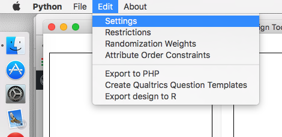
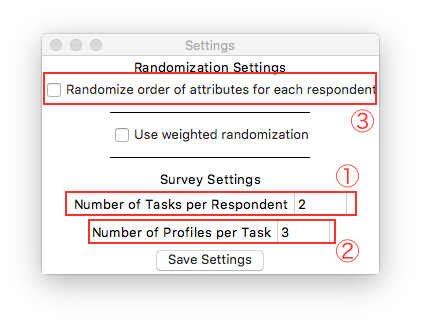
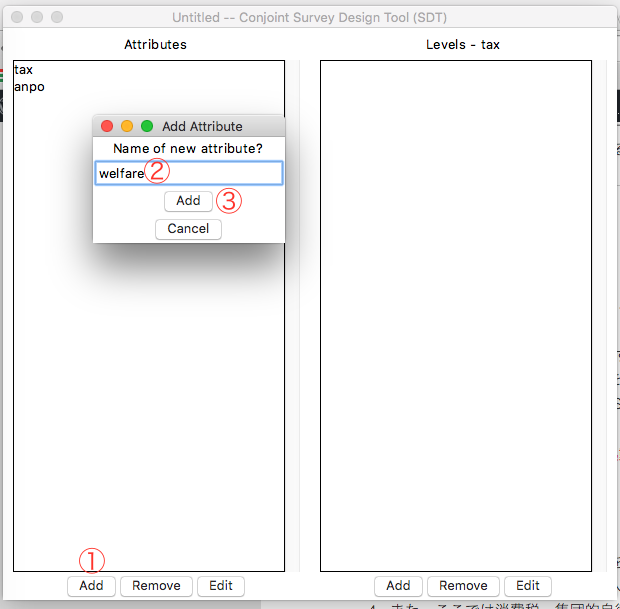
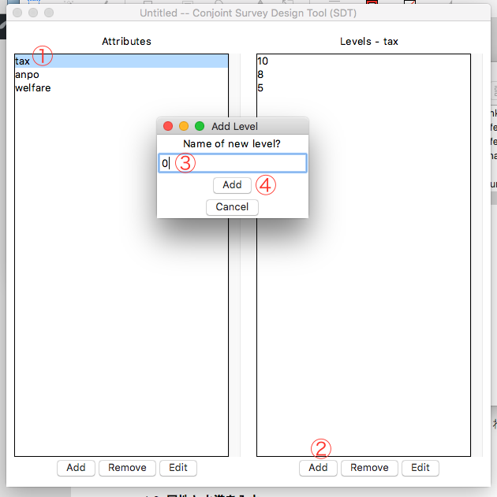
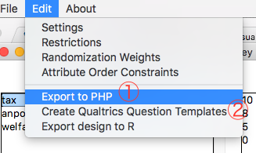

Conjoint SDT + Qualtricsでコンジョイント分析
この記事はConjoint Survey Design Toolの旧バージョンのものです。
2019年4月にConjoint Survey Design Tool Version 2が公開され、python3へ移行されました。python3ではユニコードがデフォルトになっているため、phpスクリプトの修正は不要となります。以下の記事は旧バージョンの例です（実行方法のみ最新版に対応させました）。最新バージョンであるConjoint Survey Design Tool Version 3に対応する形で書き直したいと思います。
Qualtricsでコンジョイント(Conjoint)分析のための調査票を作成する手順を紹介します。QualtricsにもConjoint機能がありますが、ここで目指すのはHoriuchi, Smith, and Yamamoto(2015)のような調査SSRN Linkを目指します。
- {SimpleConjoint}を使用する際、URL生成後、第3節の方からお読みください。
- {SimpleConjoint}はサーバーがなくても簡単なコンジョイント実験を実装可能とする東洋の神秘みたいなものです。
目標
このような調査をしたいと想定する。
Q1. 最も好きな候補者を選択してください。
| 候補者1 | 候補者2 | 候補者3 | |
|---|---|---|---|
| 消費税 | 10% (引き上げ) | 0% (廃止) | 8% (維持) |
| 集団的自衛権 | 容認 | 容認 | 否認 |
| 福祉 | 拡充 | 縮小 | 維持 |
- 候補者1
- 候補者2
- 候補者3
ここで政策の順番やその中身はランダムである。ここで用語を統一しておきたい。
- タスク(tasks): 質問の繰り返す回数を意味する。
- プロフィール(profiles): 選択肢の数を意味し、ここでは3である。(候補者1~3 / A~C)
- 属性(attributes): 各プロフィールが有する特性であり、ここでは3である。(消費税、集団的自衛権、福祉)
- 水準(levels): 各属性がとりうる値である。たとえば福祉の水準は3つである。(拡充、維持、縮小)
1. Conjoint Survey Design Tool
- Conjoint Survey Design ToolのGitHubレポジトリーへアクセスし、ファイルを入手する。GitHub
- macOS / Linuxの場合は
conjointSDT.pyを、Windowsの場合はconjointSDT.exeをダウンロードする。
- macOS / Linuxの場合は
- Conjoint Survey Design Tool(SDT)を起動する。
- macOS / Linuxの場合はターミナルでSDT保存したフォルダへ移動し、
python3 conjointSDT.pyと入力する。 - Windowsの場合は
conjointSDT.exeを実行する。
- macOS / Linuxの場合はターミナルでSDT保存したフォルダへ移動し、
1.1. TaskとProfileの設定

- メニューから[Edit] → [Settings]へ

- Number of Tasks per Respondentを2と入力
- Number of Profiles per Taskを3と入力
- また、ここでは消費税、集団的自衛権、福祉といった固定された順番で表示されるのでRandomize order of attributes for each respondentsのチェックを外す。
- [Save Setting]をクリック
1.2. 属性と水準を入力

- [Attribute]下の[Add]をクリックし、taxと入力。すくなくともOS X環境では、Conjoint SDTから直接日本語入力はできない。テキストエディタで入力してコピペする方法は出来るが、phpで出力が出来ないため意味がない。まずは、全部英語で入力する。
- 同じ手順でanpoとwelfareを追加する。

- [Attribute]でtaxを選択し、[Levels]の下のAddをクリックし、10%と入力
- 同じ手順で8%, 5%, 0%も入力する。
- 3~4の手順をanpo, welfareにも適用する。anpoにはyonin, hininを、welfareにはkakujyu, iji, shukushoを追加する。
1.3. ファイルで出力

- メニューの[Edit] → [Export to PHP]を選択し、適当に名前をつけて保存。
- 同じく[Edit] → [Create Qualtrics Question Templates]を選択し、適当な名前を付ける。ただし、この手順は必須ではない。
2. phpファイルの修正とアップロード
2.1. phpファイルの修正
- テキストエディタ(私の場合はSublime Text)で先ほど保存したphpファイルを開く。
- 適当にtaxとかanpoで検索すれば、このような行が確認できる。
$featurearray = array("tax" => array("10%","8%","5%","0%"),"anpo" => array("yonin","hinin"),"welfare" => array("kakujyu","iji","shukusho"));- ここを以下のように修正する。
$featurearray = array("消費税" => array("10%(引き上げ)","8%(維持)","5%(引き下げ)","0%(廃止)"),"集団的自衛権" => array("容認","否認"),"福祉" => array("拡充","維持","縮小"));- 保存する。
2.2. phpファイルのアップロード
- TransmitやCyberduckを利用してphpがインストールされているサーバーにアップロードする。
- 学生が利用できる大学のWeb空間はphpが利用できないところが多いので、多分出来ないと思います
- 自分のサーバーがない人はサーバーをレンタルするか、持っている人にご飯をおごる。
- ちなみに私の場合、
http://tintstyle.cafe24.com/untitled.phpでアップロードしておきました。
3. Qualtricsで調査票作成
3.1. phpファイルを埋め込む
- Qualtricsへログインし、[Create Survey]を選択。
- [Quick Survey Builder]をクリックし、適当に名前を付ける。
- [Survey Flow]をクリック。
- 新しいウィンドウに[Add a New Element Here]があるのでそれをクリック。
- [Web Service]ボタンをクリック
- 先ほどアップロードしたphpファイルのアドレスを入力し、右の[Test URL]をクリック
- [Select fields to include as embedded data]ウィンドウが表示される。[Select]の隣の[All]をクリックし、下の[Add Embedded Data]をクリック
- そのまま[Save Flow]をクリックし、調査票作成画面へ戻る。
3.2. 調査票作成
- [Create a New Question]でMultiple Choiceを選択する。
- オプションはChoiceは3と入力し、Single Answerを選択。
- 選択肢の[Click to write Choice 1]を「候補者1」にし、残りの2つも同様に「候補者2, 3」とする。
- 質問文を作成するが、ここでは2つの方法がある。
- 1.3で[Create Qualtrics Question Templates]を選択した場合は3.2.1へ
- 選択しなかったら3.2.2へ
3.2.1. Qualtrics Question Templateを利用した方法
- 1.3で[Create Qualtrics Question Templates]を選択したらTaskの数だけhtmlファイルが生成される。
- テキストエディタでTask1のファイルを開き、全てのコピーする。
- 質問文をクリックし、ボックス上段の[HTML View]をクリックし、先ほどコピーしたものを貼り付ける。
- [Normal View]をクリックし、質問文を修正する。
- ここで注意するものは「${〜}」で囲まれている部分は修正しないこと。
- その他の部分を修正すればいい。
- 次の質問を同様に作成し、今回はTask 2のhtmlファイルの内容を貼り付ける。
3.2.2. 直接打ち込む方法
- 自分なりに質問文を作成するが、属性は以下のように書く。
${e://Field/F-[タスク]-[属性]}
${e://Field/F-1-3}ならタスク1の3番めの属性であり、つまり「福祉」である。Conjoint SDTで属性のランダム化のチェックを外したため、すぐに分かる。- 水準は以下のように表記する。
${e://Field/F-[タスク]-[プロフィール]-[属性]}
${e://Field/F-1-3-1}ならタスク1、候補者3、1番目の属性(福祉)の値である。これは0%, 5%, 8%, 10%からランダムに出る。- 同じ手順でタスク2の質問文を作成する。その時は
${e://Field/F-2-[プロフィール]-[属性]}のように書く。 - 以上の作業は[HTML View]でなく[Normal View]で行う。表を挿入するなら[Rich Content Editor]で作業すれば楽